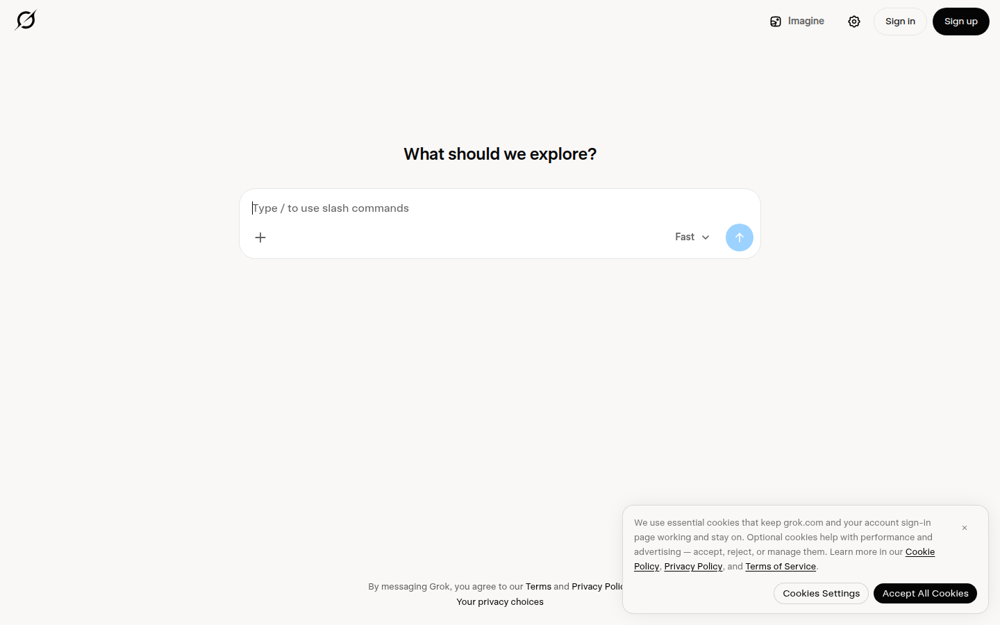
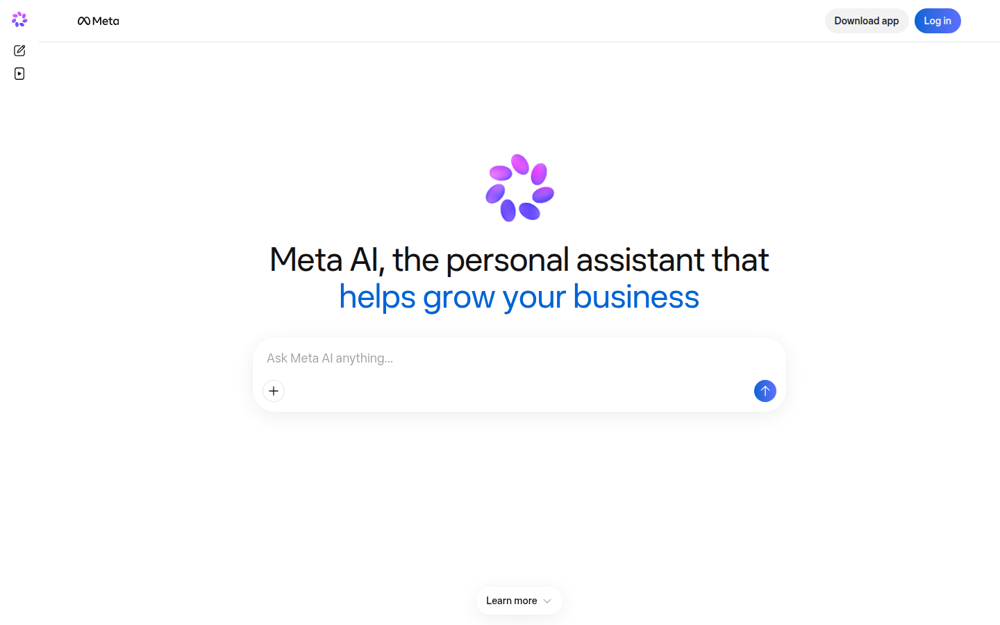
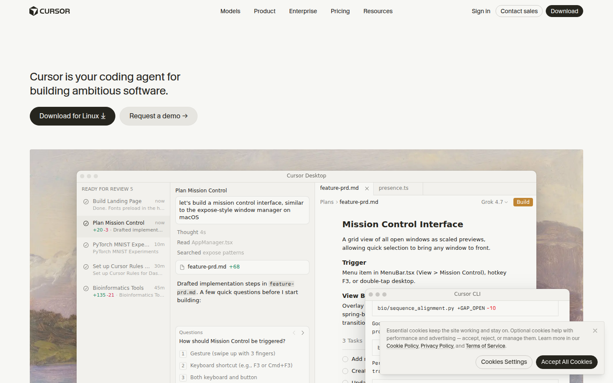

You were right that phone screenshots answer a different question. Captured on a 1440×900 desktop browser today, plus one that had to be established from documentation because every automated route is blocked. The desktop answer turns out to be the more useful one.
grok.com, signed out

meta.ai, signed out

cursor.com product shot. Cursor is where Grok Bot's admin plane now lives post-acquisition. This is the closest thing to what we are actually building.

No image: chatgpt.com, openai.com (three pages), help.openai.com and a third-party write-up all refuse automated browsers; the Dots announcement also returns 403 to an authenticated fetch. Seven routes, seven refusals. So this section is text evidence, clearly marked as such.
| What they do on desktop | What I built | |
|---|---|---|
| Structure | panes: list → thread → artifact | 5 tabs you switch between |
| Left column | a task list with a plain heading | invented category names |
| Extra space | shows the work product | stretched rows, wider gaps |
| Decisions | inline in the thread, numbered | separate queue behind a banner |
The phone screenshots said "fewer things per row". The desktop ones say something stronger: stop building a place to navigate and build a place to watch work happen. Left list of what is running and what wants you, middle the conversation, right what it produced.
That also dissolves the Work-and-Capacity problem rather than renaming it. There is no category to name, because there are no categories — just your conversations, your running work, and the thing in front of you.
Grok and Meta AI captured live from their signed-out web apps. Cursor is the product shot published on their own homepage. Nothing here is a mockup or reconstruction.